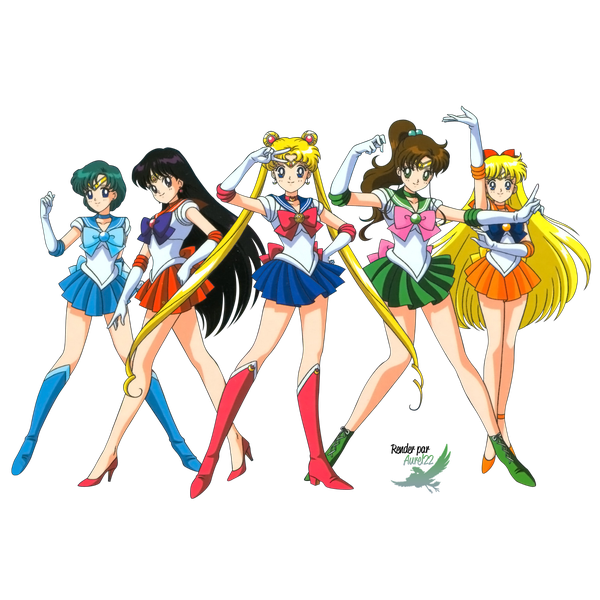

About Usagi
Usagi Tsukino(月野 うさぎ, Tsukino Usagi) is the warrior of love and justice, Sailor Moon(セーラームーン, Sērāmūn). Originally from a prosperous civilization on the Moon known as the Moon Kingdom, she was reborn on Earth and re-awoke as the leader of the Sailor Senshi.
Ono and Haruo
Characteristics
- Akira is good at arcade games
- Video games is her hobby
- She's in love with Haruo